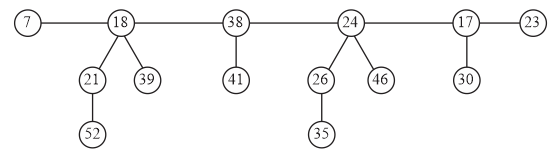
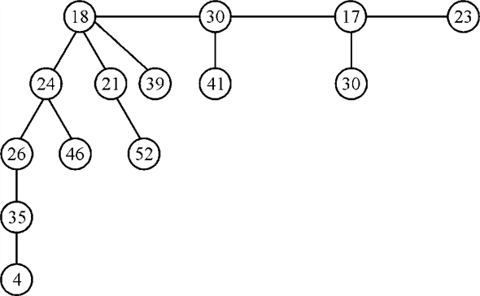
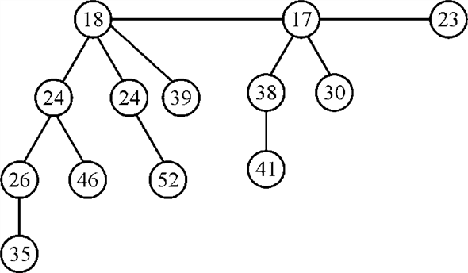
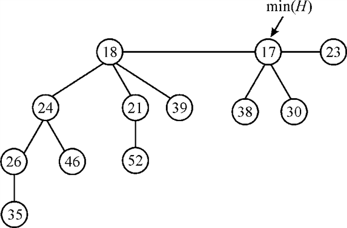

Extracting minimum value in Fibonacci heap
Fibonacci heap is a kind of data structure and the collection of min-heap-ordered trees is called the Fibonacci heap. Here, the min heaps are arranged in an order that is known as the collection of min-heap-ordered trees.
Min-heap-property is the condition in which for any node the value of its key is leading or equal to the value of its parent node.
The tree with minimum key value is the root node in the Fibonacci heap and the children of this Fibonacci heap are connected or arranged in the circular doubly linked list.
Refer the textbook for FIB-HEAP-EXTRACT-MIN.
It is used to find the minimum value node in the tree.
In above mention algorithm, the node which points to min (H) is drawing out from the heap and all its children are appended to the root list of the tree.
After that for maintaining the Fibonacci heap the algorithm CONSOLIDATE (H) is called, which arranges the nodes of the tree in heap order.
FIB-HEAP-LINK (H, y, x) is called for linking of node y as the child of the node x.
For figure 19.4(m) in the textbook, the step by step calculation of the FIB-HEAP-EXTRACT-MIN algorithm is as follows:
Setp1:
Step2: z contains some value so run the for loop for each child of
Step3: add each child of the z to the root list and set their parents to NIL

Step4: remove from the root list and setas in figure below:

Step5: Now call CONSOLIDATE (H) on the Fibonacci heap
Take an array which stores the degrees of the nodes set all of them to NIL and consider every node from the root list one by one
for
while that is if a node other than 18 is present in the root list
with degree 2
check if that is which is false
now calling FIB-HEAP-LINK(H,24,18)
remove node 24 from root list and add it to the child list of 18 as in figure:

But only one node remains with degree 3 so terminate the while loop and return back to the for loop
for
check if that is which is true so exchange the keys of nodes containing keys 38 and 17
now
call FIB-HEAP-LINK(H,38,17)
remove node 38 from root list and add it to the child list of 17 as in figure:

set
But there is only one node with degree 2 so terminate the while loop and back to the for loop
for
There is no other node in the root list having degree 0 so we will not enter in while loop ad also there is no other node in the root list so for loop is also terminated.
set
for
check ifthat is there is at least one node with degree 0 then
if
a root list is created and which contains node
set
increase the value of i as
no node is in the root list with degree 1 so
for
returns
false because
Insert 17 to the heaps root list and check if which is true
So 
for
because
So insert node 18 to the root list and check ifwhich is false.
Now no node is remaining in the heap so algorithm ends here. We get back to the FIB-HEAP-EXTRACT-MIN which returns value 7 as the lowest value and the final Fibonacci heap is as follows:
